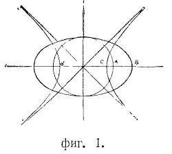

Беседа 1797 от 3877 · Беинса Дуно
Пътят на възможностите
5 ч.с.
– Само Божията Любов носи пълния живот.
Какво ще получите, ако прекарате две прави линии, перпендикулярни една на друга през един център? – Ще се образуват четири прави ъгъла. Ако разделите правите ъгли на две равни части, ще получите остри ъгли, равни на 45º. – Какво представлява физическият резултат? – Следствие, т.е. последствие на някаква причина. Каква е разликата между причината и последствието? Представете си, че имате една свещ, която след време изгаря. Какво е следствието? – Изгубване на свещта. Учените запалват свещта и я оставят да гори в ограничено пространство. Като изгори, те събират пепелта и образуваните при горението газове и доказват, че веществото на свещта не е изгубено, но само се е изменило. Теглото на свещта и на погълнатия кислород е равно на теглото на получените при горението вещества. Коя е причината за това явление? Ще кажете, че е огънят. Не, той е следствие. Вие вземате следствието за причина и доказвате, че веществото на свещта се е изменило. Свещта има ли свойствата на получените вещества? При горението на свещта се образували водни пари, газове и пепел. Както виждате, има разлика между причина и следствие.

Някъде се ражда дете – следствие. Причина за раждането му са родителите. То не знае защо е дошло на земята. Има съзнание, че живее, но защо, самo не знае. След време ще разбере защо живее и какво трябва да прави. Първоначално то живее в подсъзнанието си, а после – в съзнанието и самосъзнанието. И материалистът признава това, без да мисли много върху тоя въпрос. Той не признава съществуването на душата. Като умре, човек губи нещо от себе си; всъщност нищо не се губи. Права мисъл е нужна на човека.
Студент си в университета, но си беден, често изпадаш в затруднения. Пишеш едно писмо на приятеля си: Любезни приятелю, изпрати ми хиляда лева, да си наредя работите. Той отговаря още по-любезно: Съжалявам, че не мога да ти изпратя цялата сума, имам на разположение 500 лева. Питам: Коя е причината, че не можеш да предвидиш това? Ти знаеш, че приятелят ти е богат, но не можа да предвидиш колко пари ще ти изпрати. Сметката ти излезе крива. Следствието на това криво предположение бяха 500 лв., които приятелят ти изпрати.
Да се върнем към хиперболата и елипсата. На фиг. 1 има две хиперболи, които се движат в противоположни посоки. Хипербола съществува и в Природата. Като се движат, най-после хиперболите ще се пресекат някъде във вечността. Правите линии, които се пресичат в общ център, са диаметри на кръга. Те са еднакво дълги. В елипсата обаче диаметрите са различни: единият е по-дълъг, а другият – по-къс. Пресичането на хиперболите показва, че не се движат в една равнина, т.е. не са на една плоскост. Ако се движеха в една плоскост, те никога нямаше да се пресекат. Пресичането на хиперболите се уподобява на двама братя: единият заминава за Америка, а другият – за Африка. След време те се срещат отново – пресичат се. Тия двама души могат да бъдат – единият от тях мъж, който отива на печалба, а другият – жена, която казва: Аз трябва да раста и да се развивам. Тя отива в противоположна посока на мъжа. Те растат и се развиват; след време се срещат и се запознават. Те излизат от две семейства с различни качества. Щом се запознаят, между тях се заражда известно сродство, т.е. афинитет, както между елементите. Например водород и кислород се съединяват и образуват вода. Това става под влияние на афинитета. – Защо два обема водород се съединяват с един обем кислород? – Според валенцията им. – Кой от двата елемента е по-силен? – Кислородът. – Може да е така, може и да не е така. Това е предположение, а предположението не е доказателство. На тоя въпрос може да се възрази.
Сега, явява се въпрос: каква форма имат различните тела? Според някои учени небесните тела са валчести, организмите са елиптични, а духовните – хиперболични. Ако видиш едно духовно същество, ще зърнеш само гърба му – неговия път. От това гледище хиперболата не е нищо друго освен път на едно съзнание; елипсата е път на друго съзнание, а кръгът – път на трето съзнание. Като изучаваме пътя на тези съзнания, ние различаваме тяхното поле, както и силите, които действуват в тия полета. В бъдеще пътят на тези съзнания ще претърпи известна промяна.
Като ученици на окултна школа, вие трябва да разбирате и трите свята. Ако се движите в кръг, трябва да разбирате физическия свят с неговите закони; ако се движите по елипса, трябва да разбирате нейните закони. Те се различават от законите на кръга; ако се движите по хипербола, трябва да разбирате нейните закони. Да вярваш, че след смъртта си пак ще живееш, това е хипербола; да вярваш, че от невежа можеш да станеш учен, това е хипербола; да вярваш, че от грешник можеш да станеш светия, това е хипербола. Ученият с ред формули ще докаже, че хиперболата някъде във вечността ще претърпи известна промяна. Невъзможното в едно отношение е възможно в друго. Това значи: нещо е невъзможно при едни условия, а възможно при други. Невъзможно е да мразиш един човек или да те мрази, и да ти даде пари. Възможно е само при един случай, ако го заплашиш, че ще му напакостиш по някакъв начин. Друг е въпросът, ако го обикнеш. При любовта всички неща са възможни.
Какво представлява любовта? – Закон, чрез който се постигат всички разумни желания. – Защо трябва да обичам? – За да постигнеш желанията си. Това е твърдение, но не е научно доказано. – Защо не трябва да мразя? – За да не пречиш на развитието си. Ако мразиш и правиш опити за реализиране на своите желания, непременно ще срещнеш препятствия на пътя си. – Какво трябва да правя, за да успявам? – Замени омразата с любов, а глупостта – с разумност. Първото качество на любовта е разумността. Който люби, той е разумен, отнася се внимателно към съществото, което обича. Той му дава пълна свобода и никога не накърнява интересите му. Когато майката увива детето в пелени и го ограничава, не го ли обича? Когато приятелят ти пише писмо и затваря писмото в плик, т.е. ограничава го, не те ли обича? Затвореното писмо е кръг, който приятелят ти изпраща като на учен, да го отвориш и прочетеш. Ти отваряш писмото и гледаш – елипса, хипербола. Чудиш се какво означава това. Искаш от приятеля си хиляда лева, но той вместо хиляда ти изпраща 500 лв. – половината. Това означава хиперболата. Приятелят ти пише: Пращам ти 500 лв. Сега наближава Великден. Купи 500 яйца по един лев едното. Боядисай ги и ги продавай по два лева. Ето, ще имаш хиляда лева. Дадеш ли на приятеля си, колкото иска, друг път той ще иска двойно: ако му дадеш хиляда лева, после ще иска две хиляди; ако му дадеш две хиляди, ще иска четири.
Сегашните хора се намират в особено положение, всичко доказват научно. Обаче и ученият, като се натъкне на мъчнотии, всичко забравя. Какво е кръг, елипса, хипербола, забравя да си служи с тях. Той казва: Трябват ми хиляда лева. Той забравя, че иде Великден, че може да купи 500 яйца, да ги боядиса и продаде. Казва: Срам ме е да продавам яйца. – Да продаваш яйца е срамно, а не те е срам да искаш пари.
Днес, като слушате лекцията, доволни ли сте? Питам: Защо сте дошли да ме слушате? Гладни сте, искате да ядете. Влизате в гостилницата и чакате да ви донесат ядене. Седите пред масата и си мислите: Дано яденето не струва много – нямате достатъчно пари. Вие не знаете, че гостилничарят има голям тефтер, на който записва кой колко дължи. Следователно, ако нямаш пари, може да платиш на края на месеца. Значи, ако си гладен, има начин да се нахраниш. Някога си гладен за знания. Искаш да учиш, но нямаш средства, не можеш да следваш гимназия или университет. Намираш един учител, който е готов да те учи. Казваш му, че нямаш пари, но той иска да ти помогне и казва: Ще платиш, когато можеш. Някой не се нуждае нито от ядене, нито от знание, има всичко, но е омъчнен, нещо му тежи на сърцето. Той иска да се облекчи. Ходи натук-натам, най-после минава край една черква и влиза вътре. Слуша, свещеникът чете молитви и проповядва. И той повтаря след него, моли се. След половин час чувствува, че му олеква, тъгата му изчезва. – Кой му помогна? – Свещеникът със своите молитви. Тези разсъждения са верни, но представят две трети от истината, липсва едната трета. Това е вярно дотолкова, доколкото е вярно доказателството на учените, че материята или веществото не се губи. Свещта изгаря, но веществото ѝ не се губи. Къде отива светлината на свещта? Какво важи доказателството, че веществото на свещта не се е изгубило, когато светлината я няма? Предназначението на свещта е да свети. Де отиде светлината є.
Четеш поезията на един поет: „О, майко мила, защо си ме родила?” Гледаш, думите на място, римите – също, но защо се обръща към майка си с тези думи? Важни думи в стиха са „майко” и „родила”. Какво иска да каже поетът с това? – Тежко му е нещо. – Защо? – Или хляб няма, или в училище не може да постъпи, или черквата не му е помогнала. Като излезе на открито, той се провиква: „О, майко мила, защо си ме родила?” Аз отговарям на поета вместо майката: След като ходи на гостилница и нищо не яде; след като отиде на училище и не те приеха и след като влезе в черква и нищо не получи, вземи на заем 500 лв. от приятеля си, купи с тях 500 яйца и ги боядисай. След това ги продай, за да спечелиш още 500 лв. Казвам: Искаш ли да се справиш с една противоречива мисъл, боядисай я в червено. Червеният цвят разрешава всички мъчни въпроси в живота. Ако някой се отчае и иска да се самоубие, преди да се самоубие, нека се бодне в ръката, да пусне няколко капки кръв. Червеният цвят на кръвта ще разреши мъчнотията му. При вида на кръвта желанието му за самоубийство ще изчезне. Имаш една трудна задача, не можеш да я решиш – пусни си малко кръв.
Какво означава червеният цвят? – Път, по който се изявяват всички възможности в човека. Спираш се пред една чешма, искаш да пиеш вода, но нямаш чаша. В това време иде един човек с чаша в ръка, налива си вода и бързо отминава. Молиш го да ти услужи с чашата си, но той бърза, не се спира. Иде втори, искаш неговата чаша, но и той не я дава, не обича други да пият от чашата му. Иде трети, и той не ти услужва. Стоиш пред чешмата, мислиш какво да правиш. Най-после се навеждаш, туряш ръцете си под чешмата и пиеш.
Не очаквай на изкуствената чаша. Тури ръката си и пий. Знай, че в тебе са вложени възможности за решаване на всички трудни задачи. Докато мислиш, че не можеш сам да решиш задачите си, ти разчиташ на изкуствената чаша. Ти разполагаш с естествена чаша, която всеки момент може да ти бъде в услуга. Тури ръката си под чешмата, наведи се и пий. Това, което искаш от хората, е временно, не е реално: може и да ти го дадат, може и да не ти го дадат. Реална е само любовта, която излиза от сърцето; реална е само мисълта, която излиза от ума. Всяко добро чувство, което иде от друго сърце, е относително; всяка мисъл, която иде отвън, от друг ум, е относителна. Не казвам, че чувствата и мислите на другите хора не са истински. И те са на място, но отношението им към тебе е друго.
Мнозина изискват от хората повече, а от себе си по-малко. Те изискват първо от другите хора да бъдат добри, после от себе си. Другите да бъдат алфа, начало на нещата, а те – омега, край. Никой не може да бъде нито алфа, нито омега. Мислите ли, че като свършите една работа, сте край? След вас ще дойде втори, трети, четвърти и т.н. Много хора ще дойдат, докато се свърши известна работа. Човек е резултат на нещо, но не е нито начало, нито край. Срещам едного и му казвам как да пие вода с ръката си. – Може ли така? – Може, аз съм правил няколко опита и се убедих, че може да се пие вода и с ръка. Турям ръката си и виждам, че наистина може да се пие вода и по този начин. И така може да се махне мъчнотията.
Казваш: Аз съм неспособен човек, от мене нищо не може да стане. – От тебе не може да стане музикант, философ, поет, но друго нещо може да стане. Ще намериш последното, което можеш да станеш. Казвате, че последното е да умреш, да отвориш работа на близките си да те погребват, родителите ти да търсят пари за погребение. Това е последното според хората. Според мене последно е да направиш нещо така, че никого да не безпокоиш. – Кое е последното, което човек може да направи? Да се намериш пред една мъчнотия и да се силиш да я разрешиш, това не е последното, което може да направиш. Детето вземе една ябълка и не иска да я даде. Баща му иска ябълката, но то не я дава. Последното, което може да направи, е да вдигне ръцете си и да даде ябълката. – Защо не дава ябълката? – Защото мисли, че разрешението на всички въпроси е в ябълката. То казва: Ако ми вземат ябълката, целият ми живот ще отиде. То не знае, че могат да го набият и да вземат ябълката му. Ето защо, когато те бият няколко пъти за едно и също желание, което здраво държиш, отвори ръката си и го дай. Ако те бият за една мисъл, дай я; ако те бият за едно чувство, дай го; ако те бият за една постъпка, откажи се от нея. – Какво ще стане тогава? – Ще стане това, че няма да те бият. Щом не те бият, ти си свободен човек. Това е печалбата ти. Освободи ума, сърцето и волята си от това, за което те бият.
Задачата на ученика е да се домогне до вътрешното знание, с което се разрешават всички въпроси. Аз не говоря само за знанието на официалната наука, която има отношение главно към физическия свят. Аз имам предвид онова знание, което търси крайния резултат на нещата; което има отношение към малкия и големия свят. Каквито са отношенията на големия свят към малкия, такива са отношенията и на малкия към големия. Изучавайте своите желания, както и пътя, по който те се движат. По какъв път се движи земята? – По елипса. – По какъв път се движат нейните частици? – Това са въпроси, които трябва да се изучават. Лесно е да се каже, че водата е съставена от водород и кислород, но какво са всъщност тия елементи? Как се съединяват? Ще кажете, че те се съединяват под влиянието на афинитета, т.е. на любовта. От колко елемента е съставена любовта? – От два елемента. – А омразата? – Също от два. – Какви са тия елементи? – На тези въпроси вие сами ще отговорите.
Често хората говорят за любовта, без да имат ясна представа за нея. Това, което те наричат любов, е отражение на любовта, както образът в огледалото е отражение на човека. Каквото прави човек отвън, това прави и неговото отражение в огледалото. Следователно всяко нещо, което става точно както ти искаш, не е реално. Ако искаш хората да постъпват точно като тебе, ти не си в реалността. Колкото по-различни са нещата от това, което ти изискваш, толкова по-близо са до реалността. Искаш да имаш приятел, да прилича на тебе. Не, приятелят ти ще бъде точно противоположен на тебе: ако ти си скръбен, той ще бъде радостен; ако ти седиш, той ще стои; ако ти говориш, той ще мълчи. Ако не сте противоположни, вие сте далеч от реалността. Ако двама души са еднакво тъжни, те не могат да бъдат приятели. Ако единият е тъжен, другият трябва да бъде весел, радостен, да го насърчава. Любов без страдание не е любов. Знание без противоречие в ума не е знание.
Казвам: Животът се изявява в противоположностите. Това е закон на Битието. Щом имаш противоречия, ти си в правия път. Сам ще решаваш противоречията си, сам ще се домогнеш до вътрешното знание. Това, което сам си придобил, то ще те ползува. Без външна помощ нищо не се постига, но ако и вие сами не работите, външната помощ няма да ви ползува. – Какво представлява реалността? – Съчетание между една възможност и една невъзможност. Щом се яви една възможност, трябва да се яви и една невъзможност. Това е противоречие, но без него не може. Ако се явят две възможности, нищо не се постига.
Сега ще направя мисълта си по-ясна. Искаш да излезеш през една врата, но от двете страни стоят двама души с револвер в ръка. Единият казва: Ако минеш оттук, ще те убия. И другият казва същото. Това са две възможности, които отнемат живота ти. Виждаш други две врати. Пред едната стои човек с револвер; пред другата стои човек без револвер. Първият казва: Ако минеш оттук, ще те убия. Вторият казва: Мини свободно, нищо няма да ти направя. Ти се намираш в противоречие, но избираш пътя, който води към спасение. При всяко противоречие има два пътя: път на живот и свобода и път на ограничение и смърт. Първият от тях е правият път.
Сега всичко това, което ви говорих, представя мамалига от царевично брашно. Какво заключение ще извадите от това? Казвам: Дето има голямо противоречие, бъди последен. Дето няма противоречие, бъди пръв. – Искам да си пробия път. – И това е добре, но какво става с гранатата, която иска да си пробие път? – Тя минава през една гора, пробива си път, пукне се и падне на земята. Какво остава от нея? – Нищо. Втори път същата граната може ли да си пробие път? – Не може. Значи в живота на гранатата няма никаква философия. Ако искаш да постигнеш целта си по пътя на гранатата, нищо няма да направиш. Ако посееш една ябълчна семка, ти ще постигнеш повече, отколкото ако посееш една бомба. Посаждането на ябълчната семка е завършен кръг. Да разбереш смисъла на живота, това е хипербола. Ако изгубиш смисъла на живота, започваш да пееш „Заплакала е гората, гората и планината”. Тази песен не помага. Запей „Изгрява слънцето”. Като изгрее слънцето, всичко ще се оправи. То ще ти сложи трапеза да ядеш. Ако си уморен, ще ти даде почивка. Слънцето се отличава по това, че всичко дава. Щом изгрее, всякаква тъга изчезва. То носи всички възможности в себе си.
Носи в себе си идеята за Бога като възможност. Помислиш ли за Бога като възможност, обстановката на деня се изменя; отношенията ти с хората се подобряват; всичките ти работи се нареждат не по механичен, но по разумен начин, и ти запяваш „Изгрява слънцето.” Това е най-старата идея за Бога. Казано е в Писанието: „И аз ще се заселя между хората; ще живея в сърцата им като закон, и всички ще ме познават, от малък до голям.” Тогава няма да има страдания и смърт, глад и неплодородие, бедност и болести. – Кога ще бъде това? – Когато Бог се всели в човека. Тогава ще изгрее слънцето. Докато търсим Господа отвън някъде и не знаем къде е, слънцето не може да изгрее. Щом противоречията изчезнат, щом болестите и гладът изчезнат, слънцето на живота ще изгрее. Това показва, че Бог живее в човека.
Сега всички се стремите към реалността, дето изгрява слънцето на живота. В този път изгрява слънцето и на вашия живот. Това слънце ще изгрее за всички, но при условие, че се движите към центъра на кръга. Ако се движите към центъра на елипсата, то няма да изгрее. Ако се движите по пътя на хиперболата, то пак ще изгрее. Това е пътят, който води от материалното към духовното, от временното разбиране към вечното. Пътят на хиперболата разрешава донякъде живота. Той е отворен път, а не какъвто е в кръга, дето растеш, развиваш се, придобиваш знания и като остарееш, казваш: Ще се мре, но не зная къде отивам. – Това не е разрешение на въпроса. Питам: Къде може да намерите истината – в себе си, или вън от себе си? Първо, ще я търсите в себе си, а после вън от себе си, в хората. Човек е затворен кръг. Ще вярваш първо на себе си, а после на хората. Ако вярваш само на себе си, това е заблуждение; ако вярваш само на хората, това е друго заблуждение. Какво ще ти даде обществото? Ако си учен и способен, и ти ще му дадеш нещо, и то ще ти даде. Ако не си способен, нито ти ще дадеш нещо на обществото, нито то ще ти даде. На добрия и работлив слуга господарят с готовност плаща. Какво ще плати на мързеливия слуга?
Има един Господар в света, на Когото не сте виждали лицето. Добре, че не сте Го виждали. Ако работите, както трябва, Той ще ви плати; ако не работите добре, няма да ви плати. – Как да вярваме в това? – Казваш, че ще станеш учен човек и ставаш такъв. – Защо? – Защото работиш да реализираш желанието си. Така се сбъдва вярата ти. Казваш, че ще станеш юнак, и ставаш. Казваш, че няма да станеш учен, и не ставаш. – Защо? – Не работиш. Следователно, ако работиш, Господарят ще ти плати добре и ще повярваш, че има такъв Господар. Кажеш нещо и не вярваш – удариш се в неверието си. Щом се удариш два пъти, не чакай да се удариш трети път – измени посоката си. Трябва ли да бъдеш като мухата – да се блъскаш сто пъти в прозорците? Не виждаш ли, че са затворени? Почакай да дойде господарят, да отвори прозорците. Така постъпват умните мухи, а глупавите се блъскат и трошат главите си. Много мухи са счупили главите си и още продължават да ги чупят. Мнозина се стремят да постигнат желанията си по пътя на милионите мухи и в края на краищата трошат главите си. Като гледа външния свят, мухата казва: Красив е светът! – и се блъсне в прозореца. После казва: Затворен е този свят! Желанието на мухата да излезе вън е право, но тя среща на пътя си препятствие. Наблюдавам как една муха се блъска в долния прозорец, а не вижда, че горният е отворен. Казвам ѝ: Вдигни се малко нагоре, и ще излезеш вън. Вдигни нагоре ъгъла, измени движението си нагоре.
Казвам: И в астрологията има възходящи знаци – нагоре, и низходящи знаци – надолу. Следователно, когато се блъснеш в едно препятствие, тръгни нагоре, към възходящия знак, и направи ъгъла с няколко градуса по-голям. Когато ъгълът стане 90º, ти ще намериш хиперболичния път – закона на възможностите. Това е законът на разумността и на любовта, в който се разрешават всички задачи. Христос е изразил този закон чрез стиха: „Невъзможното за човека е възможно за Бога.” – Как ще проверим това? – Вземи слушалката на телефона и говори. Сам си в стаята, никой не може да ти помогне. Като говориш чрез слушалките с приятеля си, той веднага ще ти помогне. Ето, невъзможното става възможно. Иде влак № 125. Кой ще му отвори пътя? На станцията не знаят, че този влак пристига. Взимаш слушалката и говориш: Влак № 125 пристига. Веднага му отварят път. Какво щеше да стане с влака, ако чиновникът не беше съобщил за пристигането му? Все трябва да имате познат, да съобщи по телефона, че тръгвате. Иначе нямате отворен път. Тръгвате ли безразборно, нищо няма да излезе. Казвате: Влак № 125 тръгва. Дайте свободен път! – Ще стигне ли на време? Няма ли да срещне препятствие? – Това не е ваша работа. Вие не трябва да се съмнявате. – Да не стане катастрофа? – Това са изключения. Вървиш ли в пътя на истината, ще знаеш, че там няма да срещнеш никакви изключения. Там сигурността е 101 %. Тръгнете ли в пътя на истината, няма да срещнете никакви препятствия. Отвън може да завали малко сняг или дъжд, но това е за разхлаждане. Това е път на възможностите, път за реализиране на всички разумни желания.
Боядисайте си яйцата за Великден!
Задача: Начертайте чертежа на фиг. 1, означен с всички букви, и мислете върху него.
– Само Божията Любов носи пълния живот.
28. Лекция от Учителя, държана на 29 април 1932 г. в София – Изгрев.